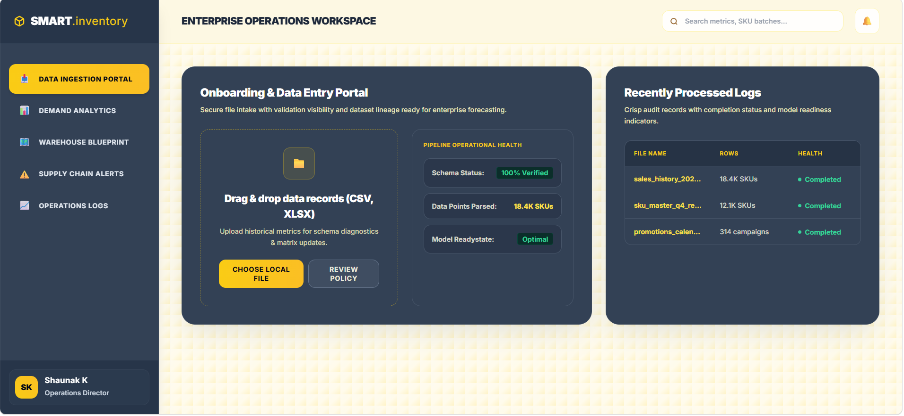
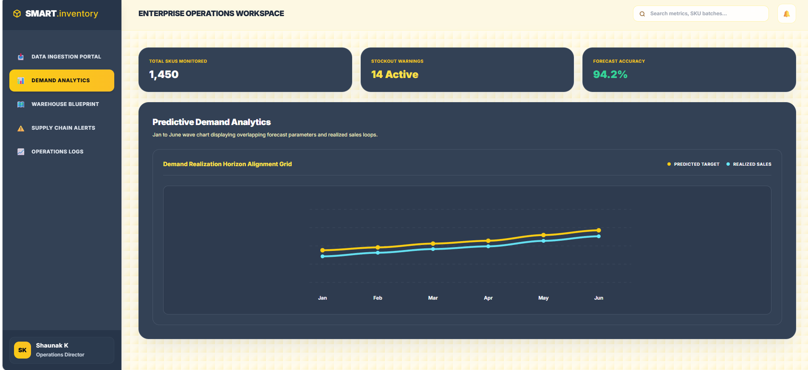
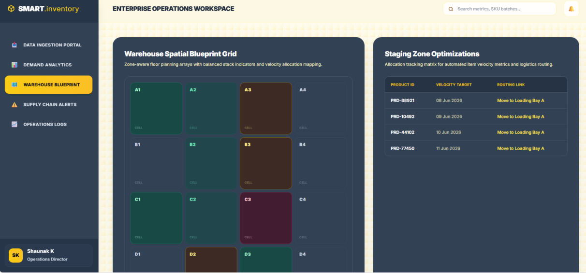
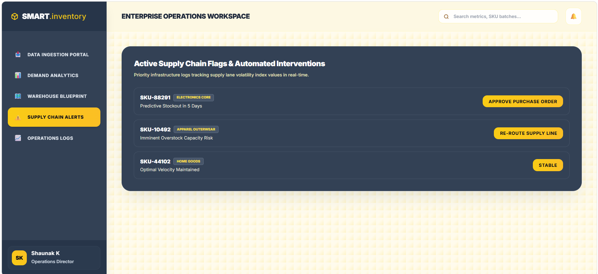
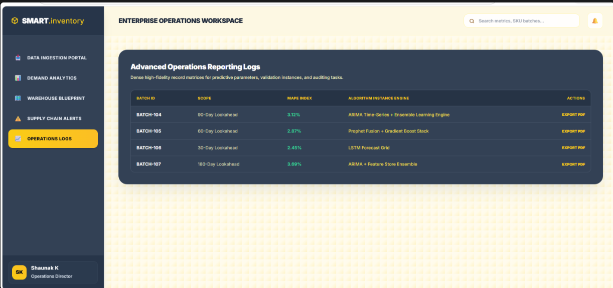

Smart Inventory Management System
Production Application Showcase & Interface Journey
Retail systems struggle with inaccurate demand forecasting, leading to financial inefficiencies and operational chaos. This platform bridges the gap by transforming predictive machine learning models into an intuitive, actionable user interface.

01. The Predictive Demand Dashboard
The core visual engine of the live website. Once the time-series forecasting models finish processing historical data, the application populates a clean, interactive analytics layer. Users get a real-time view of forecasted demand trends versus actual sales without needing to navigate complex, raw spreadsheets.

02. Interactive Warehouse Floor Mapping
To maximize operational efficiency, the interface explicitly maps stock levels onto a digital blueprint of the warehouse floor plan. Operators can filter views and visually spot exactly where high-demand inventory needs to be staged or redistributed based on upcoming predictive spikes.

03. High-Priority Alert & Automation Center
Moving inventory management from a reactive panic into a data-driven strategy. This dedicated screen tracks item thresholds dynamically. The moment a product's supply chain buffer drops below the calculated safety line, the web application flags the asset with absolute visual clarity, giving managers an instant path to action.

04. Long-Term Forecasts & Export Logs
Built for scalability, this screen handles deep-dive analytical reporting. Users can isolate individual product lines, compare historical error rates across various machine learning models, and export filtered predictive reports tailored for executive planning and long-term retail chains.
